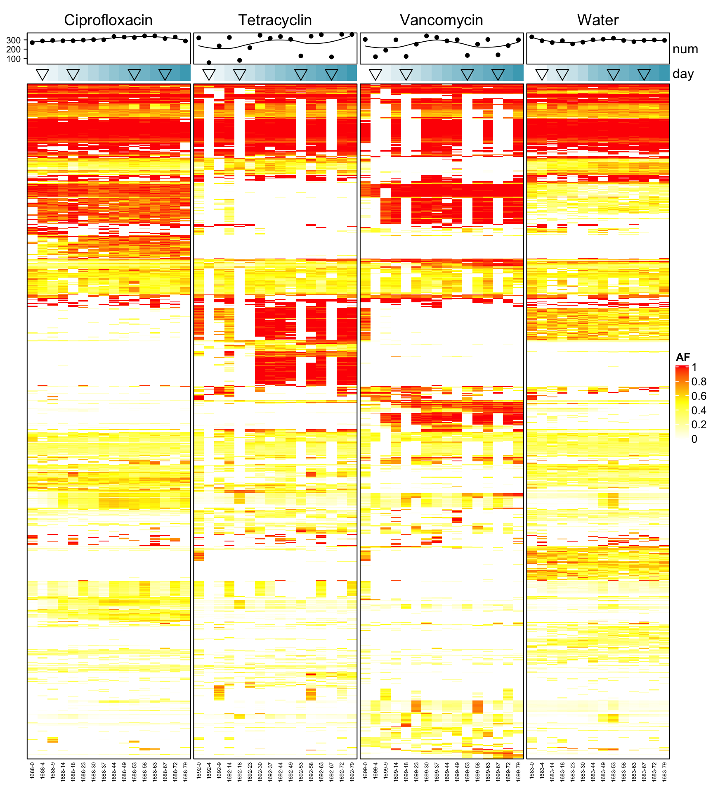

Section 4 AB Samples
4.1 Load in variants
vcfToDataframe <- function(vcf.files, contig_mapping = contig_mapping, gff.df = gff.df) {
require(vcfR)
res <- list()
for (file in vcf.files) {
library(data.table)
vcf.content <- vcfR::read.vcfR(file, verbose = FALSE)
vcf.fix <- as.data.frame(vcf.content@fix) # contains chr, position and substitution informations
vcf.info <- vcfR::INFO2df(vcf.content) # get INFO field, contains DP, AF informations
if(nrow(vcf.fix) > 0) { # there are variants
dat <- as.data.frame(cbind(vcf.fix[,c(1, 2, 4, 5, 6)], vcf.info[,c(1, 2)]))
dat$majorAF <- sapply(dat$AF, minorAfToMajorAf) # transforms e.g. AF of 0.1 to 0.9, 0.9 stays 0.9 and 0.5 stays 0.5
dat$genome <- contig_mapping[match(dat$CHROM, contig_mapping$contig),]$genome # map chr information to genome name e.g. NHMU01000001.1 -> i48
dat$genome_hr <- translateGenomeIdToFullName(tolower(dat$genome))
dat$mouse.id <- substr(tools::file_path_sans_ext(basename(file)), 1, 4)
dat$mouse.group <- translateMouseIdToTreatmentGroup(dat$mouse.id)
dat$day <- as.integer(substr(basename(file), 6, 7))
dat$phase <- binDaysByPhase(as.numeric(as.matrix(dat$day)))
dat$phase_num <- binDaysByPhaseGroup(dat$day)
dat$dp <- as.numeric(as.matrix(vcf.info$DP))
# annotate overlay of gene
dt.gff <- data.table(start = gff.df$start, end = gff.df$end,
chr = as.character(as.matrix(gff.df$chr)), feature = gff.df$product)
colnames(dat)[1:2] <- c("chr", "start")
dat$start <- as.integer(as.matrix(dat$start))
dat$chr <- as.character(as.matrix(dat$chr))
dat$end <- dat$start
dat2 <- as.data.table(dat)
setkey(dt.gff, chr, start, end)
annotated <- foverlaps(dat2, dt.gff, type="within", mult="first")
res[[tools::file_path_sans_ext(basename(file))]] <- annotated # add vcf df to list
} else{
message("Skipping")
}
}
df <- as.data.frame(do.call(rbind, res)) # merge list to df
return(df)
}# load in reference information
gff.files <- Sys.glob("data/references/joined_reference_curated_ecoli/*.gff")
gff.df <- NULL
for (gff.file in gff.files){
message(gff.file)
gff <- rtracklayer::readGFF(gff.file)
# subset since different columns are present on gff files
relevant <- data.frame(start = gff$start, end = gff$end, type = as.character(as.matrix(gff$type)), gene = as.character(as.matrix(gff$gene)), product = as.character(as.matrix(gff$product)), chr = as.character(as.matrix(gff$seqid)))
relevant$genome <- substr(basename(gff.file), 1, nchar(basename(gff.file))-4)
gff.df <- rbind(gff.df, relevant)
}## data/references/joined_reference_curated_ecoli/joined_reference_curated_ecoli.gff# load in contig information
contig_mapping <- read.csv2("data/contig_mapping_new_ref.csv", sep =";", header=T, stringsAsFactors = F) # this file contains contig names of the 12 OligoMM genomes
# load in vcf files
vcf.files <- Sys.glob("out_philipp/all_vcf/*.vcf")
vcf.samples <- suppressWarnings(vcfToDataframe(vcf.files, contig_mapping, gff.df = gff.df))## Skippingvcf.samples$feature <- as.character(as.matrix(vcf.samples$feature))
vcf.samples[which(is.na(vcf.samples$feature)),]$feature <- "outside ORFs"
vcf.samples $start <- NULL
vcf.samples $end <- NULL
vcf.samples $i.end <- NULL
colnames(vcf.samples)[3] <- "POS"
saveRDS(vcf.samples, file = "data/rds/omm_ab.rds")4.2 AF frequency
p <- ggplot(vcf.samples, aes(AF, fill = genome)) + geom_histogram()
p <- p + facet_grid(mouse.id + mouse.group ~ genome + genome_hr)
p <- p + theme_classic() + xlab("AF") + ylab("occurence")
print(p)## `stat_bin()` using `bins = 30`. Pick better value with `binwidth`.
Figure 4.1: AF of resequenced strains
p <- ggplot(vcf.samples, aes(majorAF, fill = genome)) + geom_histogram()
p <- p + facet_grid(mouse.id + mouse.group ~ genome + genome_hr)
p <- p + theme_classic() + xlab("AF") + ylab("occurence")
print(p)## `stat_bin()` using `bins = 30`. Pick better value with `binwidth`.
Figure 4.2: major AF of resequenced strains
4.3 number of variants per samples
dat <- readRDS("data/rds/omm_ab.rds")
dat$dummy <- 1
dat.agg <- aggregate(dummy ~ mouse.id + mouse.group + day + phase, dat, sum)
DT::datatable(dat.agg)4.3.1 number of variants per treatment group
p <- ggplot(dat.agg, aes(x = mouse.id, y = dummy, color = day))
p <- p + geom_jitter(shape = 4) + facet_grid(. ~ mouse.group, scales = "free_x")
p <- p + geom_boxplot() + theme_classic() + xlab("Mouse ID") + ylab("number of variants")
plotly::ggplotly(p)Figure 4.3: number of variants of all 12 OMM genomes by mouse
4.4 Heatmap
All mice
dat <- readRDS("data/rds/omm_ab.rds")
dat$sample.id <- paste0(dat$mouse.id, "-",dat$day)
dat$variant.id <- paste0(dat$POS, "-", dat$REF, "-", dat$ALT)
data.wide <- dcast(dat, variant.id ~ sample.id, value.var = "AF")## Warning in dcast(dat, variant.id ~ sample.id, value.var = "AF"): The dcast generic in data.table has been passed a data.frame and will attempt to redirect to the reshape2::dcast; please note that reshape2 is
## deprecated, and this redirection is now deprecated as well. Please do this redirection yourself like reshape2::dcast(dat). In the next version, this warning will become an error.data.wide[is.na(data.wide)] <- 0
rownames(data.wide) <- data.wide$variant.id
data.wide$variant.id <- NULL
library(circlize)
library(ComplexHeatmap)
heat <- data.matrix(data.wide)
# limit to variants that are present in at least 10% of samples
heat_num <- rowSums(heat != 0)
heat2 <- heat[which(heat_num > ncol(heat)/10),]
# limit to variants that have a high variance
heat_var_num <- matrixStats::rowVars(heat2)
heat3 <- heat2[which(heat_var_num > quantile(heat_var_num, 0.5)) ,]
dat$dummy <- 1
annot.data <- aggregate(dummy ~ mouse.id + mouse.group + day + phase, dat, sum)
annot.data$sample.id <- paste0(annot.data$mouse.id, "-",annot.data$day)
heat3.day <- annot.data[match(colnames(heat3), annot.data$sample.id),]$day
heat3.mouse.group <- annot.data[match(colnames(heat3), annot.data$sample.id),]$mouse.group
heat3.phase <- annot.data[match(colnames(heat3), annot.data$sample.id),]$phase
data.wide.sub <- dat[match(colnames(heat3), dat$sample.id),]
col_fun = colorRamp2(c(0, 0.5, 1), c("white", "yellow", "red"))
# order the heatmap by treatment group
#pdf("heat.pdf", width= 10, height = 10)
Heatmap(heat3, name = "AF", col = col_fun, border = TRUE,
top_annotation = HeatmapAnnotation(num = anno_lines(colSums(heat3),
smooth = TRUE,border = TRUE),
day=heat3.day),
cluster_columns =F,
right_annotation = rowAnnotation(prev = anno_barplot(rowSums(heat3))),
row_gap = unit(0, "mm"), column_gap = unit(0, "mm"),
column_split = heat3.mouse.group,
column_names_gp = gpar(fontsize =5),
row_names_gp = gpar(fontsize = 3),
show_row_dend = F,
show_row_names = F,
show_column_dend = F
)
Figure 4.4: number of variants of all 12 OMM genomes by mouse
4.5 Focus on mouse where we have many time points
dat <- readRDS("data/rds/omm_ab.rds")
dat$rep.group <- translateMouseIdToReplicateGroup(dat$mouse.id)
dat <- dat[which(dat$rep.group == "Full"),]
dat$sample.id <- paste0(dat$mouse.id, "-",dat$day)
dat$variant.id <- paste0(dat$POS, "-", dat$REF, "-", dat$ALT)
data.wide <- dcast(dat, variant.id ~ sample.id, value.var = "AF")## Warning in dcast(dat, variant.id ~ sample.id, value.var = "AF"): The dcast generic in data.table has been passed a data.frame and will attempt to redirect to the reshape2::dcast; please note that reshape2 is
## deprecated, and this redirection is now deprecated as well. Please do this redirection yourself like reshape2::dcast(dat). In the next version, this warning will become an error.data.wide[is.na(data.wide)] <- 0
rownames(data.wide) <- data.wide$variant.id
data.wide$variant.id <- NULL
heat <- data.matrix(data.wide)
# limit to variants that are present in at least 10% of samples
heat_num <- rowSums(heat != 0)
heat2 <- heat[which(heat_num > ncol(heat)/10),]
# limit to variants that have a high variance
heat_var_num <- matrixStats::rowVars(heat2)
heat3 <- heat2[which(heat_var_num > quantile(heat_var_num, 0.50)) ,]
dat$dummy <- 1
annot.data <- aggregate(dummy ~ mouse.id + mouse.group + day + phase, dat, sum)
annot.data$sample.id <- paste0(annot.data$mouse.id, "-",annot.data$day)
heat3.mouse.id <- annot.data[match(colnames(heat3), annot.data$sample.id),]$mouse.id
heat3.day <- annot.data[match(colnames(heat3), annot.data$sample.id),]$day
heat3.mouse.group <- annot.data[match(colnames(heat3), annot.data$sample.id),]$mouse.group
heat3.phase <- annot.data[match(colnames(heat3), annot.data$sample.id),]$phase
heat3.phase2 <- ifelse(heat3.phase == "post-treatment", 6, NA)
col_fun = colorRamp2(c(0, 0.5, 1), c("white", "yellow", "red"))
# order the heatmap by treatment group
#pdf("heat3.pdf", width= 20, height = 25)
Heatmap(heat3, name = "AF", col = col_fun, border = TRUE,
top_annotation = HeatmapAnnotation(num = anno_lines(colSums(heat3),
smooth = TRUE,border = TRUE),
day=anno_simple(heat3.day, pch =heat3.phase2 )),
cluster_columns =F,
column_split = heat3.mouse.group,
column_names_gp = gpar(fontsize =18),
row_names_gp = gpar(fontsize = 8),
show_row_dend = F,
show_row_names = F,
show_column_dend = F
)
4.6 Akkermansia Muciniphila
4.6.1 area plot 1
dat <- readRDS("data/rds/omm_ab.rds")
dat$variant.id <- paste0(dat$POS, "-",dat$REF, "-", dat$ALT)
dat <- dat[which(dat$chr == "Akkermansia_muciniphila"),]
data.wide <- dcast(dat, day + mouse.id + mouse.group~variant.id, value.var = "AF")## Warning in dcast(dat, day + mouse.id + mouse.group ~ variant.id, value.var = "AF"): The dcast generic in data.table has been passed a data.frame and will attempt to redirect to the reshape2::dcast; please note that
## reshape2 is deprecated, and this redirection is now deprecated as well. Please do this redirection yourself like reshape2::dcast(dat). In the next version, this warning will become an error. data.wide[is.na(data.wide)] <- 0
colMax <- function(X) apply(X, 2, max)
dat_mat <- data.wide[,-c(1:3)]
# filter variants
data.wide.reduced <- cbind(data.wide[,c(1:3)],dat_mat[,which(colMax(dat_mat)> 0.5)])
#data.wide.reduced <- data.wide
dat2 <- melt(data.wide.reduced, id.vars = c("day","mouse.id", "mouse.group"))## Warning in melt(data.wide.reduced, id.vars = c("day", "mouse.id", "mouse.group")): The melt generic in data.table has been passed a data.frame and will attempt to redirect to the relevant reshape2 method; please
## note that reshape2 is deprecated, and this redirection is now deprecated as well. To continue using melt methods from reshape2 while both libraries are attached, e.g. melt.list, you can prepend the namespace like
## reshape2::melt(data.wide.reduced). In the next version, this warning will become an error. dat3 <- dat2 %>% group_by(day, mouse.id) %>% mutate(Nor = value/sum(value))
set.seed(123)
col_list <- sort(unique(dat3$variable))
cols <-randomcoloR::randomColor(length(unique(dat3$variable)))
# Muller plot
p <- ggplot(dat3, aes(x = day, y = Nor, group = variable,
fill=variable))
p <- p + geom_area(color = "black", size = 0.1)
p <- p + facet_wrap(~ mouse.group + mouse.id, ncol=3)
p <- p + theme_minimal() + theme(legend.position = "none")
p <- p + ylab("Fraction")
p <- p + scale_fill_manual(values= cols, breaks = col_list)
plotly::ggplotly(p)4.6.2 line plot
dat <- readRDS("data/rds/omm_ab.rds")
dat$variant.id <- paste0(dat$POS, "-",dat$REF, "-", dat$ALT)
dat <- dat[which(dat$chr == "Akkermansia_muciniphila"),]
data.wide <- dcast(dat, day + mouse.id + mouse.group~variant.id, value.var = "AF")
data.wide[is.na(data.wide)] <- 0
dat2 <- melt(data.wide, id.vars = c("day","mouse.id", "mouse.group"))
set.seed(123)
col_list <- sort(unique(dat3$variable))
cols <-randomcoloR::randomColor(length(unique(dat3$variable)))
p <- ggplot(dat2, aes(x = day, y =value))
p <- p + geom_line(aes(group = variable), alpha= 0.2)
p <- p + theme_classic() + facet_wrap(~mouse.group + mouse.id, ncol=3)
plotly::ggplotly(p)